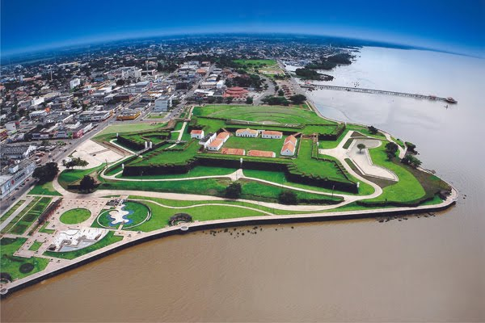
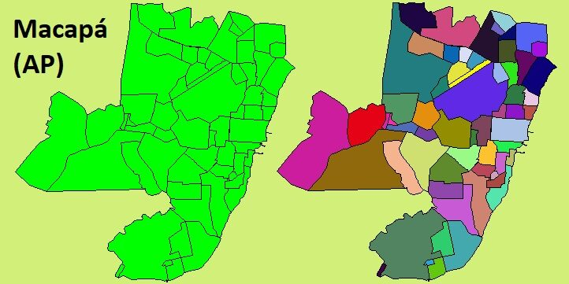

Visão Geral

O principal destaque do Amapá é o fato de ser o estado brasileiro mais preservado ambientalmente, com cerca de 70% de seu território protegido por unidades de conservação e terras indígenas. Além disso, é um dos poucos lugares do mundo onde é possível visitar a Linha do Equador e ficar com um pé em cada hemisfério no famoso Marco Zero de Macapá. Se você for destacar apenas um elemento em seu trabalho ou página HTML, recomendo: Marco Zero do Equador Localizado em Macapá, o monumento marca a passagem da Linha do Equador e é o principal cartão-postal do estado. O local permite aos visitantes ficar simultaneamente nos hemisférios Norte e Sul, tornando-se um dos pontos turísticos mais conhecidos da Amazônia brasileira.
Dados Gerais
- Capital: Macapá
- Região: Norte
- Área: 142.828 km²
- Gentílico: amapaense
- Fuso horário: UTC−3
História
O território foi alvo de disputas entre portugueses e franceses durante o período colonial. Em 1943 tornou-se Território Federal do Amapá e, em 1988, passou à condição de estado brasileiro.
Geografia
Cortado pela Linha do Equador, o Amapá possui extensa cobertura da Floresta Amazônica, clima equatorial e uma das maiores áreas preservadas do Brasil.
Economia
A economia baseia-se em serviços, comércio, mineração, pesca e atividades ligadas aos recursos naturais da Amazônia.
Cultura
Entre as manifestações culturais destacam-se o Marabaixo, o Batuque e diversas festas tradicionais influenciadas pelas culturas indígena, africana e europeia.
Turismo
Os principais atrativos incluem a Fortaleza de São José, o Marco Zero do Equador, o Parque Nacional do Cabo Orange e as áreas naturais preservadas da Amazônia.
Mapa do estado
